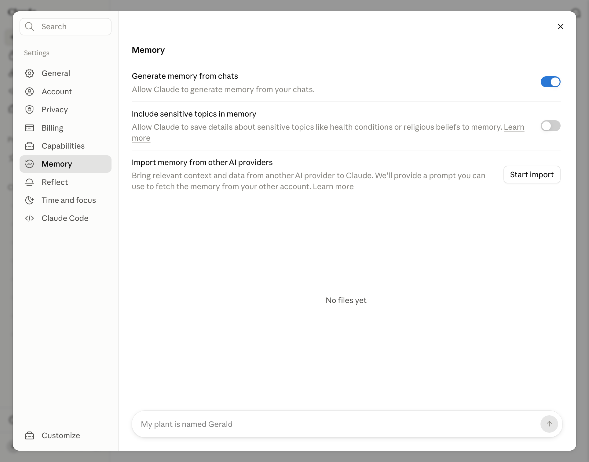

Claude.ai · настройка под себя
Как рассказать Claude о себе
Эта настройка нужна, чтобы Claude помнил, кто ты, чем занимаешься и какие ответы тебе подходят. Тогда в новых чатах он сможет приводить примеры из твоей области, а тебе не придётся каждый раз заново объяснять свой контекст
Настройки профиля
Где открыть настройки
В настройках хранятся данные, которые Claude будет использовать не в одном разговоре, а во всех новых чатах
Открой раздел General
В левом нижнем углу Claude нажми на свои инициалы или имя. В открывшемся меню выбери Settings, затем в левой колонке нажми General
Результат: открыт экран Profile с полями имени, инструкций и оформления
Данные о тебе
Как заполнить имя и инструкции
Имя и описание работы помогают Claude понимать, с кем он разговаривает. Инструкции задают постоянные правила: на каком языке отвечать, насколько подробно писать и какие задачи ты обычно решаешь

- 1 Раздел General
- 2 Имя, обращение, роль и инструкции
- 3 Системная тема оформления и шрифт чата
Заполни три поля
В What should Claude call you? напиши имя или обращение. В What best describes your work? выбери ближайшую роль. В Instructions for Claude расскажи, чем занимаешься и как тебе отвечать
Пример: «Я психолог. Моя специализация - семейные отношения и проблемы подросткового возраста. Сейчас кроме индивидуальных консультаций я создаю онлайн-тесты и анкеты. Хочу открыть онлайн-клуб для подростков, чтобы помогать им справляться с трудностями переходного возраста. Общайся со мной на ты. Отвечай коротко, без воды, обычным разговорным языком»
Кто я Меня зовут [имя]. Я [профессия или роль]. Работаю в [ниша] и помогаю [кому] получить [результат] Чем я занимаюсь сейчас Мой проект: [что ты создаёшь или развиваешь]. Моя аудитория: [кому ты помогаешь]. Моя текущая цель: [что хочешь получить] Как со мной разговаривать Обращайся ко мне на [ты или вы]. Отвечай [коротко или подробно], обычным разговорным языком. Не добавляй длинное вступление и не повторяй мой вопрос Как оформлять ответы Используй [абзацы, списки, таблицы] только когда это помогает. Если ответ можно дать в двух строках, дай его в двух строках Что нельзя делать Не выдумывай факты, цифры, ссылки и мой опыт. Если данных действительно не хватает, задай один конкретный вопрос
Результат: в новом чате Claude обращается к тебе правильно и учитывает твою работу в примерах и рекомендациях
Удобство чтения
Как выбрать оформление и шрифт
Эти настройки не меняют качество ответов. Они нужны только для того, чтобы тебе было удобно читать Claude днём, вечером и при разном освещении
В строке Appearance выбери системное, светлое или тёмное оформление. В Chat font выбери шрифт, который тебе легче читать
Результат: экран не режет глаза, а длинные ответы читаются без напряжения
Память Claude
Зачем включать память
Память нужна, чтобы Claude постепенно запоминал твои проекты, предпочтения и важные факты из разговоров. Благодаря этому в новом чате он сможет продолжить работу с учётом прошлого контекста, а тебе не придётся снова рассказывать всё с начала

- 1 Memory: раздел памяти
- 2 Generate memory from chats: запоминать контекст из разговоров
- 3 Include sensitive topics: отдельно разрешить чувствительные темы
- 4 Import memory: перенести данные из другого ИИ
Включи память из разговоров
Открой Settings → Memory и включи Generate memory from chats. Создание памяти из старых разговоров может занять некоторое время. Ниже будут появляться темы, которые можно просмотреть, уточнить или удалить
Чувствительные темы: Include sensitive topics in memory разрешает сохранять сведения о здоровье, религии и других личных темах. Если такая память тебе не нужна, оставь переключатель выключенным
| Instructions | Memory |
|---|---|
Постоянные правила | Факты из разговоров |
Инкогнито-чат не использует историю и память и не добавляет туда новый разговор
Результат: в разделе Memory видны сохранённые темы, а ненужные или неверные сведения можно удалить
Если раньше был ChatGPT
Как перенести данные из ChatGPT
Если ChatGPT уже знает, чем ты занимаешься и как тебе удобнее получать ответы, этот контекст можно перенести в Claude. Тогда не придётся восстанавливать всю информацию вручную
Открой Settings → Memory, найди Import memory from other AI providers и нажми Start import. Перенос может занять время. После завершения проверь темы памяти и исправь то, что Claude понял неточно
Импорт пока экспериментальный: он переносит полезный контекст, а не полную копию истории чатов. Важные правила ответа всё равно добавь в Instructions for Claude
Результат: Claude получил начальный контекст о тебе, а ты проверила сохранённые сведения
Финальная проверка
Как проверить настройки
Проверка нужна, чтобы сразу заметить неверное имя, лишний факт или слишком общую инструкцию, а не исправлять это в каждом следующем разговоре
Открой новый обычный чат и спроси: «Что ты уже знаешь обо мне и как должен оформлять ответы?»
Claude настроен под тебя
- Правильно обращается к тебе
- Верно называет твою работу и текущий проект
- Приводит примеры из твоей области
- Соблюдает нужную длину и тон ответа
- Не добавляет выдуманных фактов
Если что-то не совпало: постоянное правило исправь в Instructions, а неверный факт удали или уточни в Memory
Официальные материалы
Источники
Следующий шаг
Собери свою систему работы с ИИ
В ИИ-Лагере ты настроишь Claude Code и Codex под свой проект, научишься давать им контекст и получать готовые материалы без повторных объяснений
Настроить ИИ под свой проект